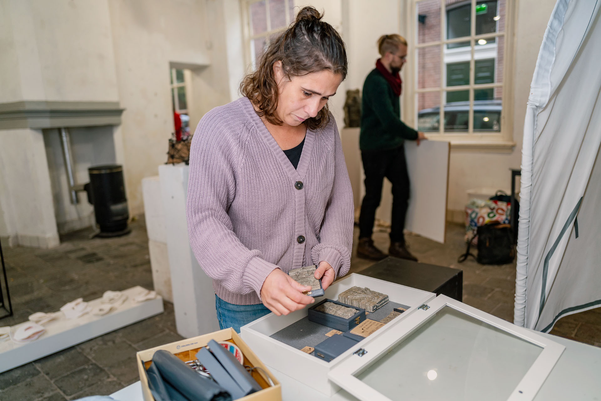
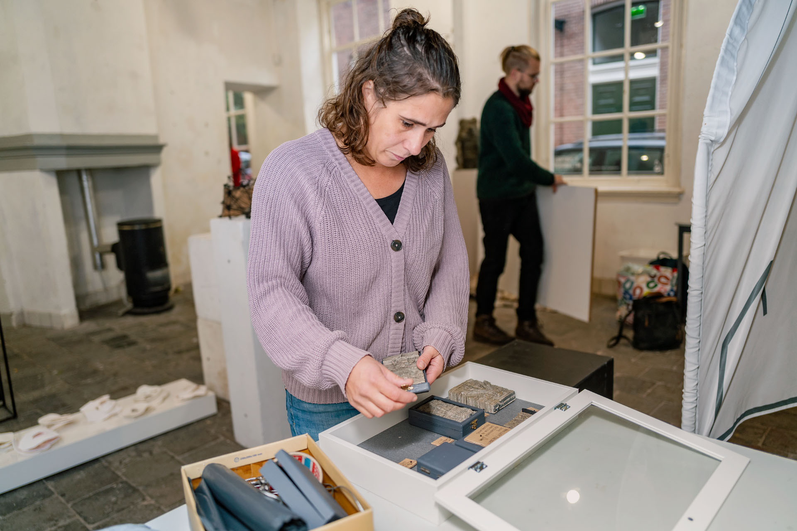

Welkom bij Het Langhuis, een toonaangevende expositie- en werkruimte die gewijd is aan hedendaagse beeldende kunst. Gevestigd in een prachtig monumentaal pand in het oudste deel van de binnenstad van Zwolle, vormt onze kunstruimte een verfijnde samenkomst van geschiedenis en hedendaagse artistieke expressie. Het Langhuis fungeert als een podium waar erfgoed en moderne creativiteit hand in hand gaan. Onze missie is het creëren van een brug tussen de tijdloze elegantie van ons erfgoed en de vernieuwende kracht van hedendaagse kunst.
 

Galerie R
1969 — 1972
Mei 1969 werd een galerie geopend in het door de Stichting Woon- en Werkruimte beheerde Langhuis aan de Goudsteeg. Er bestond een behoefte bij de in de Emanuëlshuizen wonende kunstenaars aan een ruimte om werk te exposeren.
In Zwolle was er op dat moment niet zo’n mogelijkheid. Dat veranderde; de afdeling monumentenzorg van de gemeente restaureerde het uit 1636 stammende pand; Het Langhuis waar overigens over de historie niet veel over bekend is, alleen dat het lange tijd als woonhuis dienst heeft gedaan.
Omstreeks deze tijd zocht een familie Resink in Zwolle naar een ruimte om een galerie te beginnen, en omdat de ideeën van de Resinks over het doel en de functie overeenkwamen met die van de Stichting woon- en werkruimten voor kunstenaars te Zwolle werd besloten het beheer van Het Langhuis aan de familie Resink in handen te geven.
Eén van de voorwaarden was dat de bewoners van de naastgelegen “Emanuëlshuizen” éénmaal per jaar een overzichtstentoonstelling van hun werk mochten maken en ook op andere wijze moest er aandacht aan de bewoners geschonken worden.
Enige tijd heeft de galerie goed gedraaid; er vonden naast tentoonstellingen muziekuitvoeringen plaats en ‘Galerie R’ kreeg een zekere naam.Onderlinge onenigheden leidden en uiteindelijk tot een sluiting van de galerie in het voorjaar van 1972.
St. B.K
Kunstuitleen
1973-1974
In het najaar van 1973 werd de galerie heropend door nieuwe ‘bewoners’; de Stichting Beeldende Kunst / De Kunstuitleen hadden onderdak gekregen in het Langhuis.
Daar het gebruik niet meer binnen de doelstellingen lag van de Stichting Woon- en Werkruimten voor Kunstenaars te Zwolle was de huurovereenkomst met de familie Resink verbroken.
Omdat er voor de stichting Beeldende Kunst en de kunstuitleen niet direct een nieuw onderdak waren, bleven deze tot oktober 1974 in Het Langhuis. Toen Het Langhuis weer leeg kwam kon een begin gemaakt worden met herstel- en restauratiewerkzaamheden die in 1969 waren blijven liggen. In november 1975 kon Het Langhuis weer in gebruik worden genomen.
Stichting Galerie
Het Langhuis
Op 25 juli 1989 is de stichting Galerie Het Langhuis opgericht als rechtspersoon naast de Stichting woon- en werkruimte Zwolle.De gemeente Zwolle, de enige subsidiegever, eiste dat en om de subsidie veilig te stellen is op die eis ingegaan. Dit werd toegejuicht door de gebruikers van de Emmanuëlshuizen. Het beheer van Het Langhuis viel in handen van de stichting.
De gemeente Zwolle heeft besloten om vanaf 2015 geen subsidie meer te verlenen aan Het Langhuis. Op 11 januari 2015 was de officiële heropening van de expositieruimte in de Zwolse binnenstad. Het begin van een nieuwe periode waarin Het Langhuis geheel op eigen kracht een podium en werkruimte blijft bieden aan talentvolle kunstenaars.